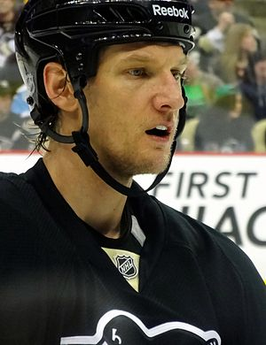

Kолишній американський хокеїст, що грав на позиції захисника. Грав за збірну команду США. Володар Кубка Стенлі. Провів понад 700 матчів у Національній хокейній лізі.
Хокейну кар'єру розпочав 1995 року в ХЛСШ.Протягом професійної клубної ігрової кар'єри, що тривала 16 років, захищав кольори команд «Філадельфія Флаєрс», «Нашвілл Предаторс», «Піттсбург Пінгвінс» та «Нью-Йорк Айлендерс».Загалом провів 718 матчів у НХЛ, включаючи 68 ігор плей-оф Кубка Стенлі.Виступав за збірну США, провів 16 ігор в її складі.
Після завершення кар'єри гравця один із тренерів клубу «Чикаго Блекгокс».
Володар Кубка Стенлі в складі «Піттсбург Пінгвінс» — 2009.
Kолишній канадський хокеїст, що грав на позиції крайнього нападника. Провів понад 800 матчів у Національній хокейній лізі.
Хокейну кар'єру розпочав 1954 року. Протягом професійної клубної ігрової кар'єри, що тривала 21 рік, захищав кольори команд «Піттсбург Пінгвінс», «Нью-Йорк Рейнджерс», «Детройт Ред-Вінгс» та «Едмонтон Ойлерс». Загалом провів 879 матчів у НХЛ, включаючи 59 ігор плей-оф Кубка Стенлі.
Kанадський хокеїст, що грав на позиції крайнього нападника. Грав за збірну команду Канади.
Хокейну кар'єру розпочав 1979 року в ЗХЛ. Протягом професійної клубної ігрової кар'єри, що тривала 10 років, захищав кольори команд «Калгарі Флеймс», «Лос-Анджелес Кінгс», «Філадельфія Флаєрс», «Піттсбург Пінгвінс» та «Бостон Брюїнс». Загалом провів 84 матчі в НХЛ, включаючи 1 гру плей-оф Кубка Стенлі. Виступав за збірну Канади.
Kанадський хокеїст, що грав на позиції центрального нападника.Провів понад 700 матчів у Національній хокейній лізі.
Хокейну кар'єру розпочав 1965 року. Протягом професійної клубної ігрової кар'єри, що тривала 11 років, захищав кольори команд «Бостон Брюїнс» та «Піттсбург Пінгвінс». Загалом провів 739 матчів у НХЛ, включаючи 82 гри плей-оф Кубка Стенлі.
Kанадський хокеїст, що грав на позиції захисника.Провів понад 500 матчів у Національній хокейній лізі.
Хокейну кар'єру розпочав 1967 року. 1970 року був обраний на драфті НХЛ під 13-м загальним номером командою «Бостон Брюїнс». Протягом професійної клубної ігрової кар'єри, що тривала 10 років, захищав кольори команд «Бостон Брюїнс», «Каліфорнія Голден-Сілс», «Сент-Луїс Блюз» та «Піттсбург Пінгвінс». Загалом провів 580 матчів у НХЛ, включаючи 5 ігор плей-оф Кубка Стенлі.
Kанадський хокеїст, що грав на позиції центрального нападника.
Хокейну кар'єру розпочав 1958 року виступами за команду «Герші Берс» в АХЛ. Протягом професійної клубної ігрової кар'єри, що тривала 9 років, захищав кольори команд «Піттсбург Пінгвінс», «Торонто Мейпл-Ліфс», «Вінніпег Джетс», «Окленд Сілс» та «Чикаго Блекгокс». Загалом провів 380 матчів у НХЛ, включаючи 15 ігор плей-оф Кубка Стенлі.
Kанадський хокеїст, що грав на позиції воротаря. Провів понад 200 матчів у Національній хокейній лізі.
Хокейну кар'єру розпочав 1994 року в ГЮХЛК. 1995 року був обраний на драфті НХЛ під 76-м загальним номером командою «Піттсбург Пінгвінс». Протягом професійної клубної ігрової кар'єри, що тривала 19 років, захищав кольори команд «Піттсбург Пінгвінс», «Торонто Мейпл-Ліфс», «Лос-Анджелес Кінгс», «ДЕГ Метро Старс», «Пустерталь» та «Дюк д'Анжер». Загалом провів 218 матчів у НХЛ, включаючи 1 гру плей-оф Кубка Стенлі.
Kанадський хокеїст, що грав на позиції захисника. Провів понад 700 матчів у Національній хокейній лізі.
Хокейну кар'єру розпочав 1992 року в МХЛ. 1992 року був обраний на додатковом драфті НХЛ командою «Тампа-Бей Лайтнінг». Протягом професійної клубної ігрової кар'єри, що тривала 15 років, захищав кольори команд «Тампа-Бей Лайтнінг», «Торонто Мейпл-Ліфс», «Нью-Йорк Рейнджерс», «Едмонтон Ойлерс», «Піттсбург Пінгвінс», «Детройт Ред-Вінгс» та «Гамбург Фрізерс». Загалом провів 659 матчів у НХЛ, включаючи 47 ігор плей-оф Кубка Стенлі.
Kанадський хокеїст, захисник клубу НХЛ «Піттсбург Пінгвінс».
Хокейну кар'єру розпочав 2009 року. 2011 року був обраний на драфті НХЛ під 150-м загальним номером командою «Ванкувер Канакс». Захищав кольори професійних команд «Ванкувер Канакс» та «Торонто Мейпл-Ліфс». Наразі ж грає за клуб НХЛ «Піттсбург Пінгвінс». Наразі провів 76 матчів у НХЛ,включаючи 4 гри плей-оф Кубка Стенлі.
Kанадський хокеїст, що грав на позиції захисника. Провів понад 700 матчів у Національній хокейній лізі.
Хокейну кар'єру розпочав 1967 року. Протягом професійної клубної ігрової кар'єри, що тривала 13 років, захищав кольори команд «Піттсбург Пінгвінс», «Торонто Мейпл-Ліфс», «Даллас Блек Гокс» та «Портланд Бакерус». Загалом провів 753 матчі в НХЛ, включаючи 29 ігор плей-оф Кубка Стенлі.
 Kанадський хокеїст, що грав на позиції воротаря.
Kанадський хокеїст, що грав на позиції воротаря.
Професійну хокейну кар'єру розпочав 1951 року. Протягом професійної клубної ігрової кар'єри, що тривала 24 років, захищав кольори команд «Піттсбург Пінгвінс», «Торонто Мейпл-Ліфс», «Каліфорнія Голден-Сілс», «Нашвілл Діксі Флаєрс» та низки інших клубів нижчих північноамериканських ліг. Загалом провів 61 матч у НХЛ.
Aмериканський хокеїст, захисник клубу НХЛ «Торонто Мейпл-Ліфс». Гравець збірної команди США.Володар Кубка Стенлі.
Хокейну кар'єру розпочав 1997 року в ХЛСШ. 2000 року був обраний на драфті НХЛ під 13-м загальним номером командою «Монреаль Канадієнс». Захищав кольори професійних команд «Монреаль Канадієнс», «Колумбус Блю-Джекетс», «Атланта Трешерс», «Вінніпег Джетс», «Кароліна Гаррікейнс» та «Піттсбург Пінгвінс». Наразі ж грає за клуб НХЛ «Торонто Мейпл-Ліфс». У 2017 році, граючи за команду «Піттсбург Пінгвінс», став володарем Кубка Стенлі. Наразі провів 958 матчів у НХЛ, включаючи 25 ігор плей-оф Кубка Стенлі.

| Сезон | Структурний поділ | Місто | Ігри | Виграні ігри | Нічия | Плей-офф |
|---|---|---|---|---|---|---|
| 1967/68 | НХЛ Західний дівізіон | 10 із 12
5 із 6 |
74 | 27 | 13 | — |
| 1968/69 | НХЛ Західний дівізіон | 11 iз 12
5 iз 6 |
76 | 20 | 11 | — |
| 1969/70 | НХЛ Західний дівізіон | 8 із 12
2 із 6 |
76 | 26 | 12 | 1/2 фiнала |
| 1990/91 | НХЛ Конференція Принца Уельського Дивізіон Патріка | 7 iз 21
2 iз 11 1 iз 6 |
80 | 41 | 6 | Володар Кубка Стенлі |
| 1991/92 | НХЛ Конференція Принца Уельського Дивізіон Патріка | 6 iз 22
4 iз 11 3 iз 6 |
80 | 39 | 9 | Володар Кубка Стенлі |
| 2020/21 | НХЛ Східний дивізіон | 5 из 31
1 из 8 |
57 | 36 | 3 | 1-й раунд |
| 2021/22 | НХЛ Східна конференція Столичний дивізіон | 12 iз 32
7 iз 16 3 iз 8 |
82 | 46 | 11 | 1-й раунд |